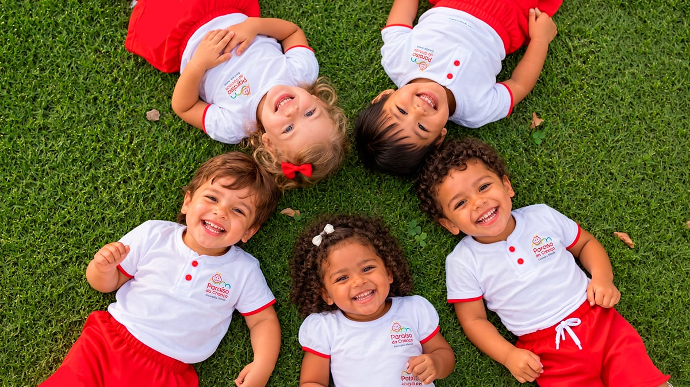
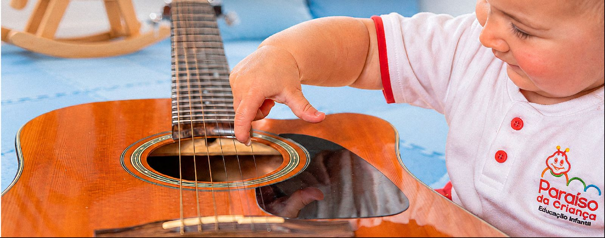
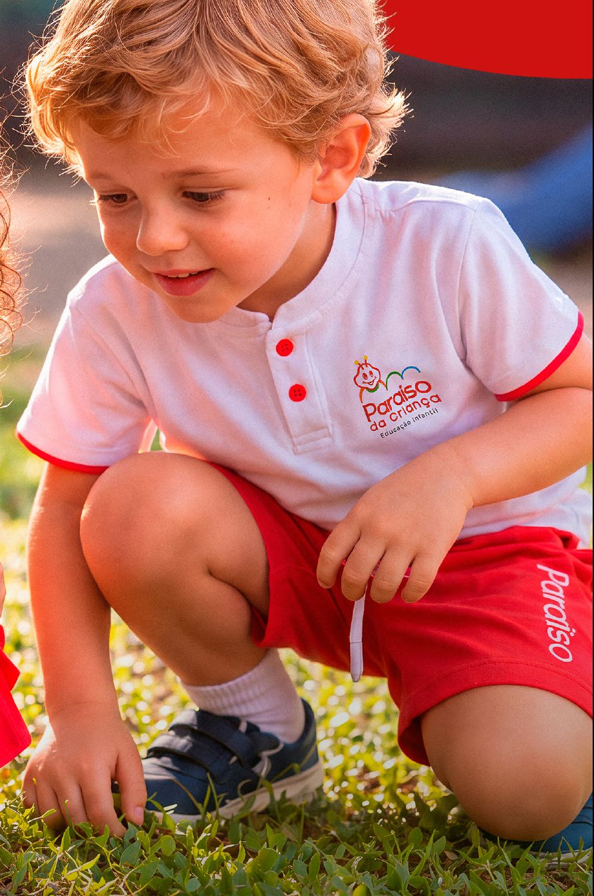
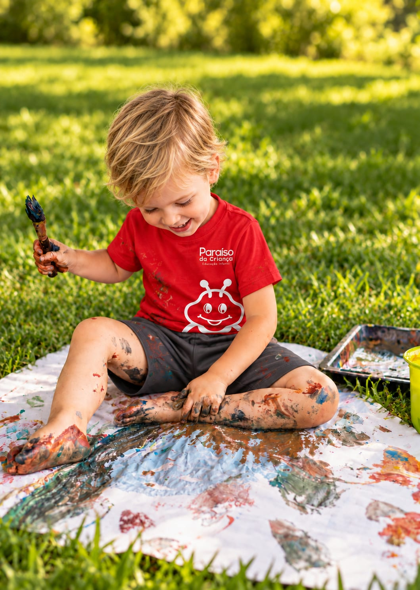

Portfólio
O dia a dia do Paraíso em imagens.
Espaços, natureza e atividades: um pouco do que a criança vive aqui.










Ainda não há fotos nesta categoria.
Vem para o Paraíso
Venha ver de perto.
As fotos mostram um pouco. A visita mostra o resto.